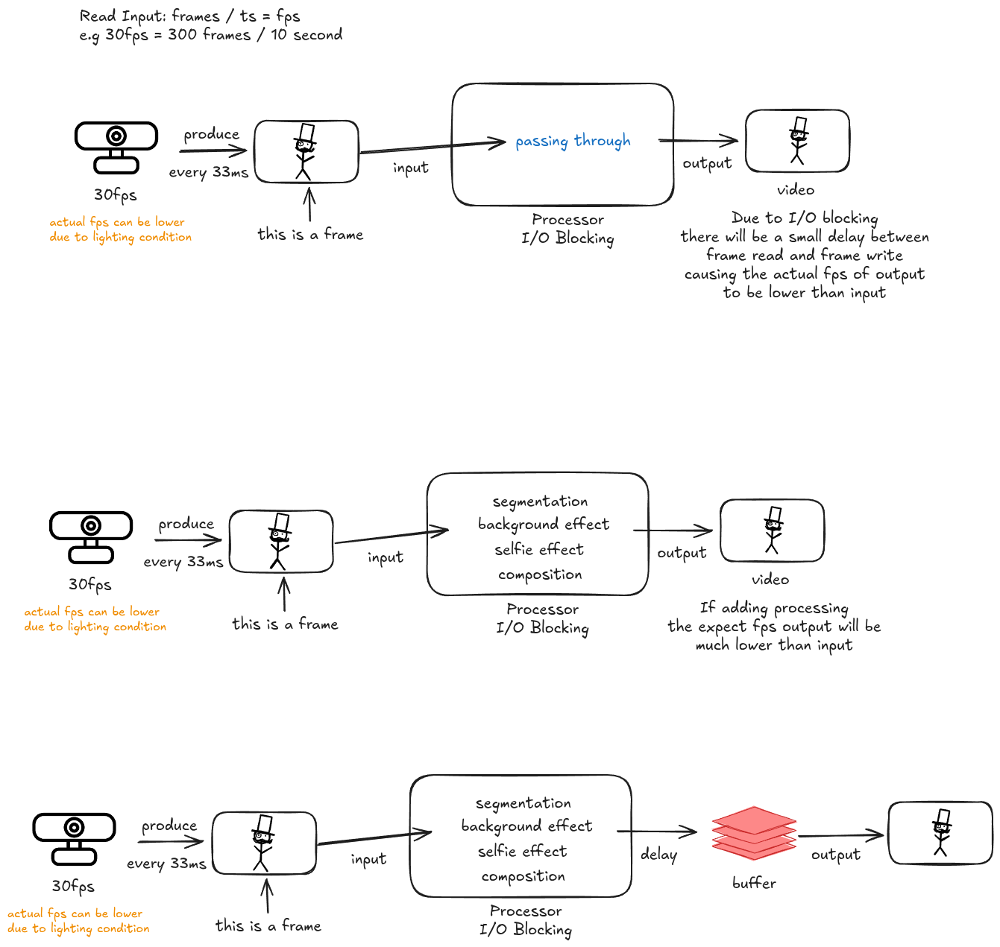

Hey folks, I'm a software engineer who's spent way too many late nights wrestling with real-time video pipelines—think live streaming apps, AR filters, and video calls that don't make you look like you're in a laggy time warp. Today, I want to dive into the nitty-gritty of how video frames go from your camera to the screen, and why things like I/O blocking, heavy processing, and clever buffering can make or break your FPS (frames per second). I'll break it down step by step, drawing from my own battles with these systems, and share some tips on optimizing them.
Starting Simple: Raw Camera Input and the Output Dream
Picture this: You've got a basic camera setup cranking out frames at 30 FPS—that's one frame every roughly 33 milliseconds. In a perfect world, the processor just grabs that frame, does nothing fancy, and spits it out to the display or stream at the same smooth 30 FPS.
But here's where reality bites. Even in this bare-bones setup, there's I/O blocking lurking in the shadows. Reading frames from the camera hardware and writing them to output isn't instantaneous—it involves syscalls, data copying, and sometimes waiting on hardware buffers. That tiny delay adds up, meaning your actual output FPS might dip below 30, especially if lighting sucks or the camera's sensor is finicky (low light often forces longer exposure times, slowing things down). From my experience, ignoring this in early prototypes leads to jittery video that frustrates users right out of the gate.
Throwing in the Heavy Stuff: When Processing Tanks Your FPS
Now, let's crank up the complexity. Say you're building something cool like a virtual background for video calls or a selfie filter with segmentation (separating you from the background) and effects. That frame doesn't just pass through anymore—it hits a processing gauntlet: segmentation algorithms (maybe using ML models like MediaPipe or custom CNNs), background swapping, selfie enhancements (smoothing skin, adding AR overlays), and finally compositing it all back together.
This is where compute delay rears its ugly head. If your processor (CPU, GPU, or even a dedicated NPU) takes, say, 50ms per frame, but frames are coming in every 33ms, you're screwed. The system backs up like traffic on a Friday afternoon. Output FPS plummets—I've seen it drop to 10-15 FPS in unoptimized code, making the video feel choppy and unresponsive. Plus, I/O blocking is still there, compounding the issue. Pro tip: Profile your pipeline with tools like NVIDIA Nsight or simple Python timers to spot bottlenecks. Often, it's not the ML inference itself but data transfers between CPU and GPU that kill you.
The Hero We Need: Buffering to Smooth Things Out
Alright, so how do we fix this mess without rewriting everything? Enter the frame buffer—a simple queue or ring buffer that decouples input/processing from output.
After processing, instead of rushing the frame straight to output, you stash it in the buffer. This lets the output pull frames at a steady rate, even if processing times fluctuate (e.g., due to varying scene complexity). In my projects, I've used OpenCV's VideoWriter with a custom thread-safe queue in Python, or Vulkan fences for GPU-side buffering in lower-level stuff.
The wins:
- Consistency King: Buffers iron out spikes. If one frame takes extra time (maybe a big background change), the buffer keeps feeding the output smoothly, avoiding stutters.
- Decoupled Magic: Processing can chug along asynchronously. If it falls behind, frames pile up; if it catches up, the buffer empties. This is gold for multi-threaded designs—I've threaded capture, process, and render stages to boost throughput by 2x on consumer hardware.
- The Latency Trade-Off: Yeah, there's a catch. Frames chill in the buffer, adding end-to-end delay (think 100-200ms in a well-tuned system). For video conferencing, keep it under 150ms to avoid that awkward "are you there?" vibe. Measure it with timestamps on frames and adjust buffer size dynamically.
In practice, with buffering, you might stabilize at 20-25 FPS output from a 30 FPS input—still a dip, but way more usable. Tune buffer depth based on your worst-case processing time; too small and you drop frames, too big and latency balloons.
Wrapping Up: The Real-World Balance
Nailing video pipelines is all about balancing quality, speed, and resources. Whether you're hacking on WebRTC for browsers or optimizing for mobile with Android's Camera2 API, always benchmark I/O, compute, and buffering. It's saved my bacon on deadlines more times than I can count. If you've got war stories or questions on implementing this in code, hit me up in the comments!
Key Takeaway: Real-time video is a dance between hardware constraints (I/O), computational limits (processing), and user experience (latency). Master the buffer, profile relentlessly, and remember—every millisecond counts when you've got 33ms to work with.